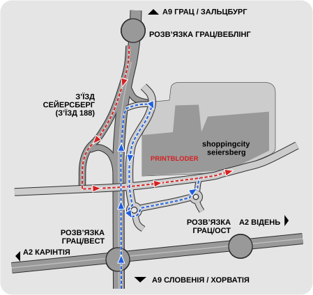

Як дістатися та контакти
Як нас знайти
До нашого магазину в Shopping City Seiersberg можна дістатися автомагістраллю A2, вулицею Triester Straße або через селище Seiersberg.
У Shopping City Seiersberg ви знайдете нас на 1-му поверсі над Primark.
Контакти
Printshop BloderSCS Seiersberg
8054 Graz
Австрія
- Телефон: +43 316 24 35 77
- Е-пошта: shop@printbloder.at
- Пошта: за вказаною вище адресою

Карта й маршрут
Карта завантажується з Google Maps лише після вашого натискання. При цьому до Google передаються дані, зокрема ваша IP-адреса.